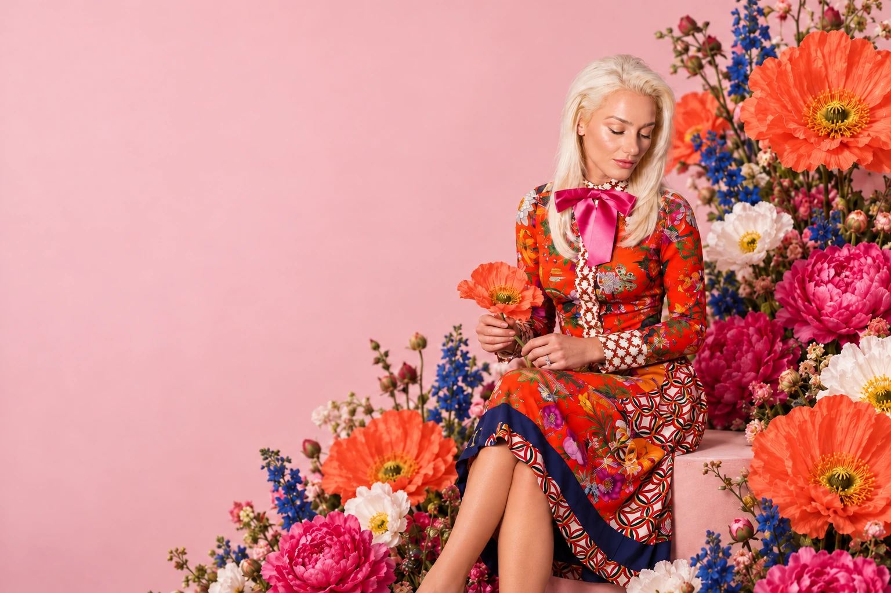
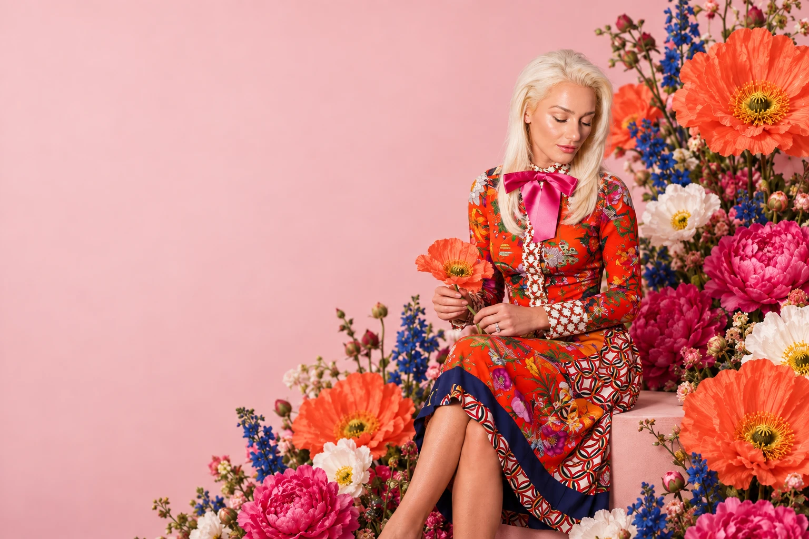

JOANNE DONOHUE / PRODUCT MANAGER & BUILDER
I build
what’s next
in AI and retail.
I turn messy problems into useful products.
Ecommerce instincts. Data depth. AI curiosity.
01 / FOLLOW YOUR CURIOSITY
There’s more
where that came from.
Evidence.
Impact.
More
direction.

02 / A DIFFERENT LENS03 / BEYOND THE SCREENPitch in.
Give back.
Explore a different side of my work. Swipe or use the arrows.
03 / THE HUMAN BEHIND THE ROADMAP
Hi, I’m Joanne.
I contain multitudes.
I’m a product manager with a background in ecommerce, analytics, and experimentation. My work has taken me through Mars, Expedia, and investing at Sonoran Ridge Capital.
I like connecting dots across disciplines: customer needs, commercial outcomes, technical possibilities, and thoughtful design. I can talk strategy, dig into the data, and build to learn.
Outside the roadmap? Art supplies, desert trails, and an endlessly growing collection of things I want to understand.
The professional backstory ↗HAVE A PROBLEM WORTH SOLVING?